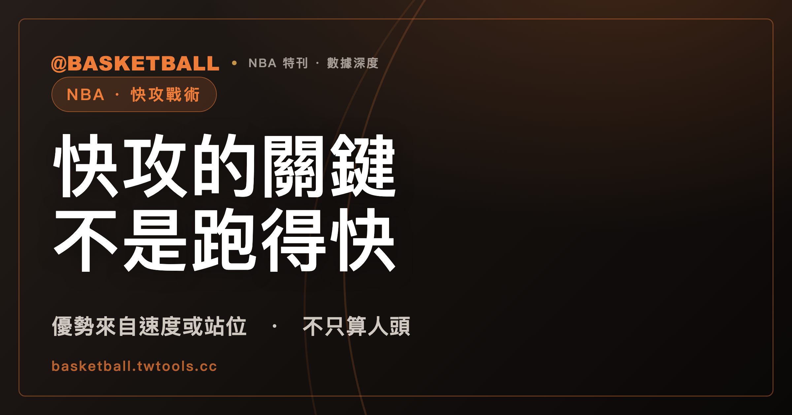

快攻的關鍵不是跑得快：NBA 規則裡的「優勢」，不只算人頭
快攻（fast break）常被想成「誰跑得快」，但依 FIBA 教練認證詞彙表與 NBA 2025-26 官方規則書，判斷快攻還有另一條線索：攻守轉換的瞬間，防守方有沒有來得及回位、站好。這篇文章從快攻怎麼發動、規模怎麼分，拆到 NBA 規則書裡「優勢」兩個字包含哪些情況，也整理「數字優勢」這個常聽到的說法，在官方文件裡目前是什麼地位。

新手村｜戰術入門・快攻與轉換進攻
看球常聽到「打快攻」「打反擊」，直覺會覺得快攻就是「跑得比對方快」。但把 FIBA 教練認證的《Basketball Terminology》詞彙表和 NBA 2025-26 官方規則書放在一起看，會看到一個更精確的判準：快攻發生在攻守轉換的瞬間，防守方還沒站好防守陣型；一旦雙方都就定位，就進入半場進攻的邏輯。
這篇文章從快攻怎麼發動、規模怎麼分，一路拆到 NBA 規則書對「優勢」的定義，以及「數字優勢」這個中文轉播圈常用的說法，在官方文件裡目前是什麼位置。讀完之後，你應該能分辨快攻的幾種觸發情境、看懂 primary break 與 secondary break 這兩個詞各指什麼，也能自己套用規則書的用語去判斷一個假設情境。
快攻與半場進攻，差別不是誰跑得快，而是兩種不同的比賽狀態
FIBA 教練認證詞彙表把「轉換」（transition）定義為：球隊從進攻轉為防守（defensive transition），或從防守轉為進攻（offensive transition）時的移動。其中「進攻轉換」指的是原本在防守的一方突然拿到球權，必須從防守心態切換成進攻；「防守轉換」則相反，原本在進攻的一方突然失去球權，必須立刻回頭防守。
半場進攻是雙方都已經就定位之後的陣地戰，進攻方要面對站好的防守陣型；快攻則發生在這個「站好」還沒完成之前。也就是說，快攻和半場進攻的差別不是節奏快慢的程度差異，而是比賽當下處在哪一種狀態——防守方有沒有時間回位、組成完整的防守陣型。這個狀態上的差別，是後面幾節談「優勢」的基礎。
快攻怎麼發動：籃板、抄截，甚至是「對手剛進球」之後
依 FIBA 教練認證詞彙表對 fast break 的定義，一支球隊透過三種情境取得球權之後，開始盡快往對方籃框推進，希望趁對方措手不及、拿到一個輕鬆的出手機會：防守籃板、抄截，或者「made shot」（有一方命中得分）。
前兩種情境（籃板、抄截）比較符合直覺——己方搶到球或抄到球，立刻往前衝。第三種情境常被忽略，而且方向容易搞反：這裡指的是對手命中得分之後，己方發邊線球重新取得球權，再趁對手回防、發球員限時把球送進場內的那幾秒，快速往前推進；不是「己方剛投進球」之後自己發動快攻——己方進球後球權轉到對手手上，換對手決定要不要打快攻，不會是己方推進的起點。
詞彙表另外收錄兩個描述快攻推進路線的用語：「outlet」（發動快攻的第一傳，或是留在後場接應這一傳的球員）與「filling the lanes」（三線快攻跑位，進攻球員分別跑在球場右側、中線、左側三條路線上）。這兩個詞說明的是快攻怎麼往前推進，不是快攻能不能發動的判準。
快攻的規模：primary break 與 secondary break 只定義參與人數
同一份 FIBA 詞彙表把快攻依參與球員人數分成兩個詞：primary break（只有少數球員參與的快攻）與 secondary break（多數球員都投入的快攻）。這兩個詞的定義只講參與人數，沒有寫兩者的先後順序，也沒有寫「primary break 沒能直接得分之後才會變成 secondary break」這種因果關係——這是常見的口語理解方式，但不是詞彙表逐字定義的內容，讀這兩個詞時只能當成「規模」的分類，不必自己腦補觸發條件。
跟在快攻第一波之後的球員，詞彙表給了一個專門的稱呼：trailer（跟隨者），定義裡特別寫明通常是中鋒或大前鋒，跟在快攻第一波球員之後補上場。
| 詞彙 | FIBA 詞彙表定義的重點 |
|---|---|
| primary break | 只有少數球員參與的快攻 |
| secondary break | 多數球員都投入的快攻 |
| trailer | 通常是中鋒或大前鋒，跟在第一波球員之後補上場的球員 |
NBA 規則書怎麼定義「優勢」：速度與站位都算，不是只看人數
依 NBA 2025-26 官方規則書 Rule No. 4（Definitions）Section IV——Fouls，「轉換得分機會」（transition scoring opportunity）成立的條件是：在球權轉換之後，進攻方持續推進，並且享有「基於比賽的速度、防守方的站位，或兩者」的優勢。這句定義沒有把優勢限定在人數上——速度上的領先、防守方還沒排好站位，都可以單獨構成優勢，不必等到人數比防守方多。
同一份規則書另外有一條獨立的罰則，用的是更窄的詞：「至少一人優勢」（one-man advantage on a fast break）。依 Rule No. 12B（Fouls and Penalties – Personal Foul）Section I(e) 的罰則條文，防守球員如果對一名沒持球的進攻球員犯規，而進攻方當下至少有一人優勢、防守方用犯規中斷比賽，罰則是兩罰。這一條才是明確指向人數面向的優勢。
把這兩條放在一起看，可以看出 NBA 規則書用了兩層不同寬窄的「優勢」：Rule No. 4 的「advantage」語意比較廣，涵蓋速度、站位；Rule No. 12B 的「one-man advantage」語意比較窄，專指人數。中文轉播常說的「快攻有沒有優勢」，如果只想著人數夠不夠，等於只用到規則書裡比較窄的那一層。
快攻什麼時候「算數」：FIBA 統計手冊的 8 秒與半場站定兩個門檻
前面幾節談的是快攻怎麼發動、怎麼分規模，以及規則書怎麼定義優勢；另外還有一份文件，從統計角度給出快攻「何時結束」的可操作門檻。依 FIBA《統計員手冊 2024》（Version 1.0）第 2.4 節「Fast-break points」，快攻得分的官方統計定義是：球隊在球權轉換之後，於 8 秒之內、且發生在對方尚未站好半場防守陣型之前，快速得到的分數。
這兩個門檻（時間上限、防守是否站定）要一起看：出手時間在 8 秒之內，但對方已經站好半場防守，不算快攻得分；對方防守還沒站定，但已經超過 8 秒，同樣不算。這是統計手冊給的認定標準，用來判斷一次得分要不要被算進「快攻得分」這個統計欄位，跟前一節規則書裡的犯規罰則是兩份不同性質的文件——一份管統計怎麼記，一份管犯規怎麼罰。
「數字優勢」是教練圈常見的說法，但查不到官方逐字定義
中文轉播與教練圈常說的「數字優勢」「人數優勢」，對應的英文說法是「numbers advantage」或「numerical advantage」，用來描述 2 打 1、3 打 2 這類進攻人數多於防守人數的情境。這個說法在教練圈常見，但目前查不到 FIBA 或 NBA 官方文件用這個確切詞組、並給出逐字定義。NBA 規則書用的是前一節提到的「advantage」（語意較廣，速度與站位都算）與「one-man advantage」（語意較窄，專指人數），兩者都不等同「數字優勢」這個詞本身。
所以「數字優勢」可以當成一個讀者容易理解的白話描述，但不建議把它當成規則書寫定的官方詞彙來引用——目前查到的官方文件裡，找不到這個詞的逐字定義。
用「優勢還在不在」判斷一個假設情境
前面幾節拆出兩層線索：快攻的核心是攻守轉換瞬間的比賽狀態（防守方沒站好），而 NBA 規則書把這種狀態下的優勢，定義成速度、站位、或兩者，不限於人數。把這兩層線索放在一起，可以整理出一個判斷框架：快攻推進到一半，優勢是不是還在，要同時看人數、速度、站位三件事，不能只看人數還占不占多——這是這篇文章借規則書的用語整理出來的讀法，不是 NBA 規則書或教練手冊寫定的教學準則，規則書本身沒有給出「該不該收回半場」這種教練決策層級的明文規定。
舉一個假設情境練習套用（不是真實比賽的案例）：假設某隊抄截之後打出 3 打 2 快攻，進攻方在人數上占多；但防守方靠折返速度快，其中兩人已經退回禁區站定，還有一名防守球員沒歸位。這種情況下，人數優勢的 3 打 2 雖然還在紙面上成立，但站位已經被防守方補上一部分，實際的優勢要看速度與站位加起來還剩多少，不是單看「3 打 2」這個人數就能下結論。這只是套用規則書用語做的假設練習，遇到真實比賽時，判斷仍然要靠當下的速度與站位，不是套公式。
快攻的優勢一旦被防守方追平，比賽就回到雙方都已就定位的半場進攻邏輯；半場防守要用區域聯防還是人盯人，是另一個題目，可以看本站的區域聯防與人盯人的差別。快攻沒能直接得分、又接上擋拆發動進攻時，可以參考擋拆入門。
常見問題
快攻只能算「有人數優勢」的情況嗎？
不是。依 NBA 2025-26 官方規則書 Rule No. 4（Definitions）Section IV——Fouls 對「轉換得分機會」的定義，優勢可能來自比賽的速度、防守方的站位，或兩者，並沒有限定必須要有人數上的優勢；規則書另外有一條「至少一人優勢」（one-man advantage）的罰則條文，才是專指人數面向的優勢。中文常說的「數字優勢」在 FIBA 或 NBA 官方文件裡目前查不到逐字定義，是教練圈常見的說法，不是規則書用詞。
快攻是不是只有搶到籃板、抄截之後才能發動？
不是。依 FIBA 教練認證《Basketball Terminology》詞彙表，快攻（fast break）的觸發情境列出三種：防守籃板、抄截，或對手命中得分。第三種情境是對手投進之後，己方發邊線球重新取得球權、再往前推進——不是己方剛進球後自己發動快攻，因為己方進球後球權轉到對手手上，換對手決定要不要打快攻。
primary break 跟 secondary break，哪一個先發生？
依同一份 FIBA 教練認證詞彙表，這兩個詞只定義參與人數：primary break 是只有少數球員參與的快攻，secondary break 是多數球員都投入的快攻。詞彙表沒有寫兩者的先後順序或觸發條件，不建議把「primary break 沒打成才會變成 secondary break」當成詞彙表寫定的規則。
快攻得幾分才算「快攻得分」，有官方的算法嗎？
依 FIBA《統計員手冊 2024》（Version 1.0）第 2.4 節，快攻得分（fast-break points）的官方統計定義是：球隊換得球權後 8 秒之內、且發生在對手尚未站好半場防守陣型之前的得分。NBA 官方規則書全文找「fast break」這個詞，只出現在罰則條文裡（例如前面提到的「至少一人優勢」罰則），沒有像 FIBA 詞彙表那樣給「fast break」單獨立一個定義詞條；FIBA 官方比賽規則書（2024 年 10 月版）本身也只在「不良運動精神犯規」條文用了「in transition」這個詞描述類似情境，同樣沒有給出獨立定義。
資料來源
- FIBA Europe Coaching Certificate – Basketball Terminology（教練認證詞彙表，PDF 建立日期 2024-11-21，無版次編號）：本機快照
packs/_evidence-fast-break-basics/fiba-europe-terminology.txt，2026 年 9 月 28 日 23:10 取得，"Fast break"、"Transition"、"Offensive transition"、"Defensive transition"、"Outlet"、"Filling the lanes"、"Primary break"、"Secondary break"、"Trailer" 各詞條。 - NBA Official Playing Rules 2025-26 賽季規則書：Rule No. 4（Definitions）Section IV——Fouls「Transition Take Foul」第 (5) 款；Rule No. 12B（Fouls and Penalties – Personal Foul）Section I(e) 第 (7) 款。本機快照
evidence/nba-2025-26-playing-rules.txt（沿用桌內既有快照），2026 年 9 月 28 日 23:16 查閱。 - FIBA Statisticians' Manual 2024（Version 1.0）第 2.4 節「Fast-break points」：本機快照
packs/_evidence-fast-break-basics/fiba-statisticians-manual-2024.txt，2026 年 9 月 28 日 23:11 取得。 - FIBA 官方比賽規則書 2024（Official Basketball Rules 2024，2024 年 10 月版）Article 37「Unsportsmanlike foul」37.1.1：本機快照
evidence/fiba-official-rules-2024.txt（桌內既有快照），2026 年 9 月 28 日 23:05 查閱，僅作「in transition」用語佐證，非快攻定義來源。